A fast, native podcast app for Mac, iPhone, and iPad. Queue-first listening. No subscriptions, no ads, no nonsense.
macOS · Universal (Apple Silicon & Intel) · Developer ID signed & notarized · Requires macOS 26 or later
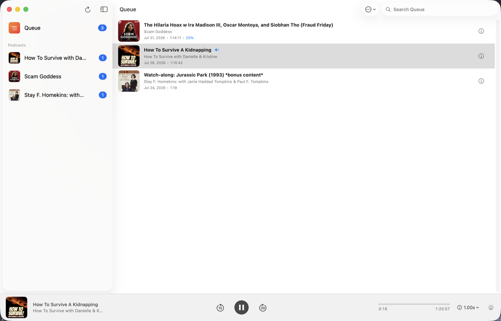
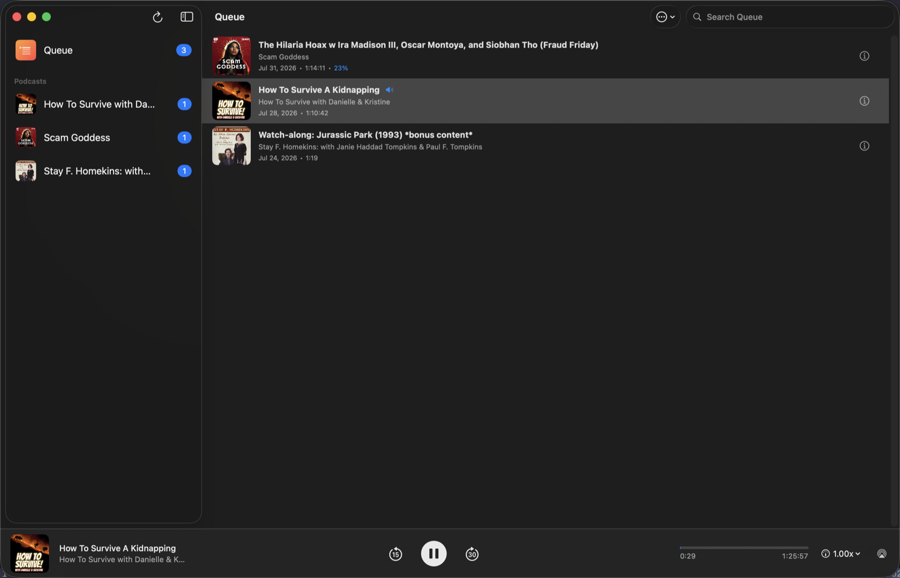
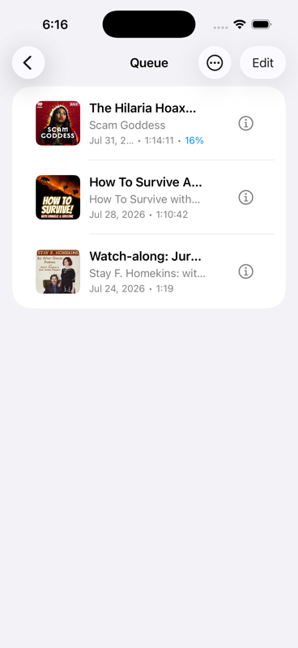
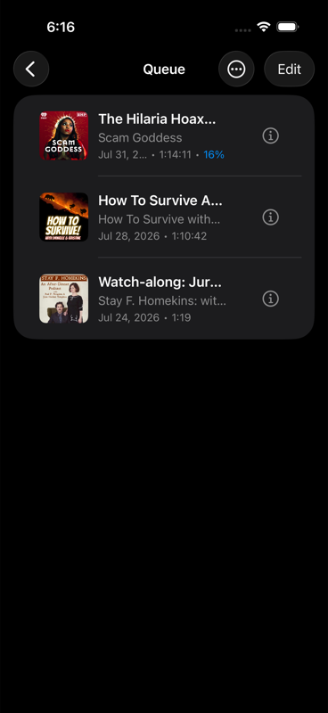
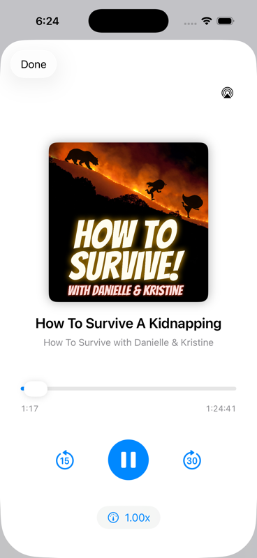
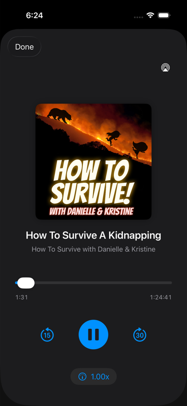
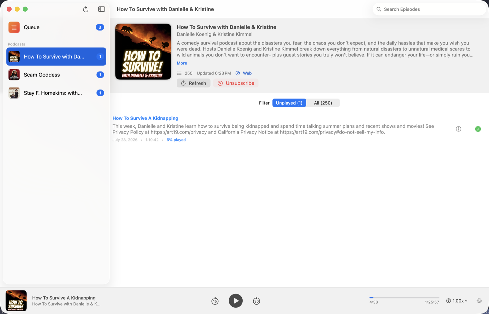
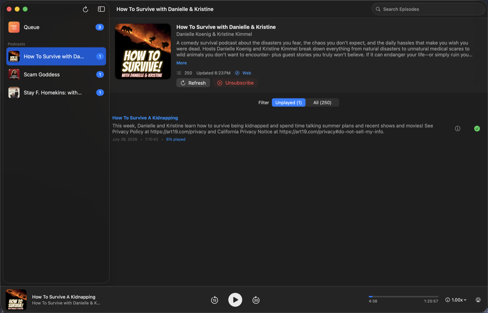
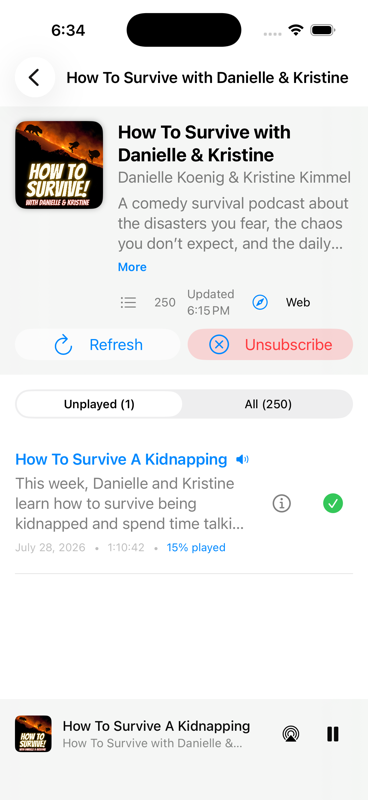
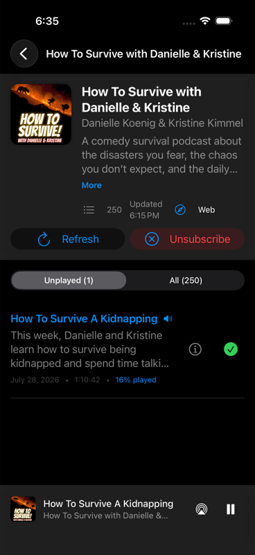
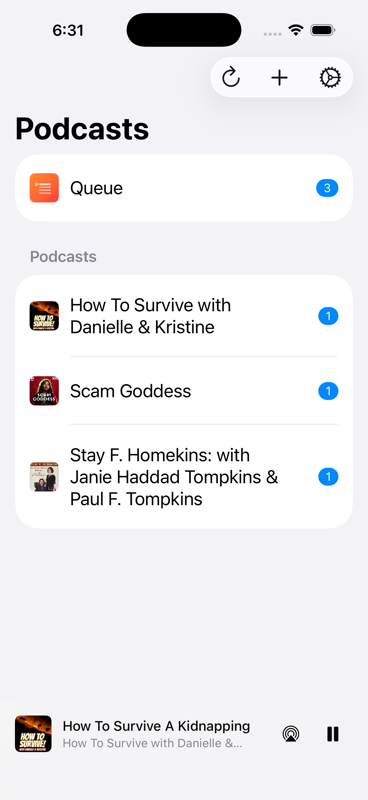
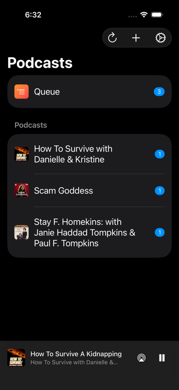
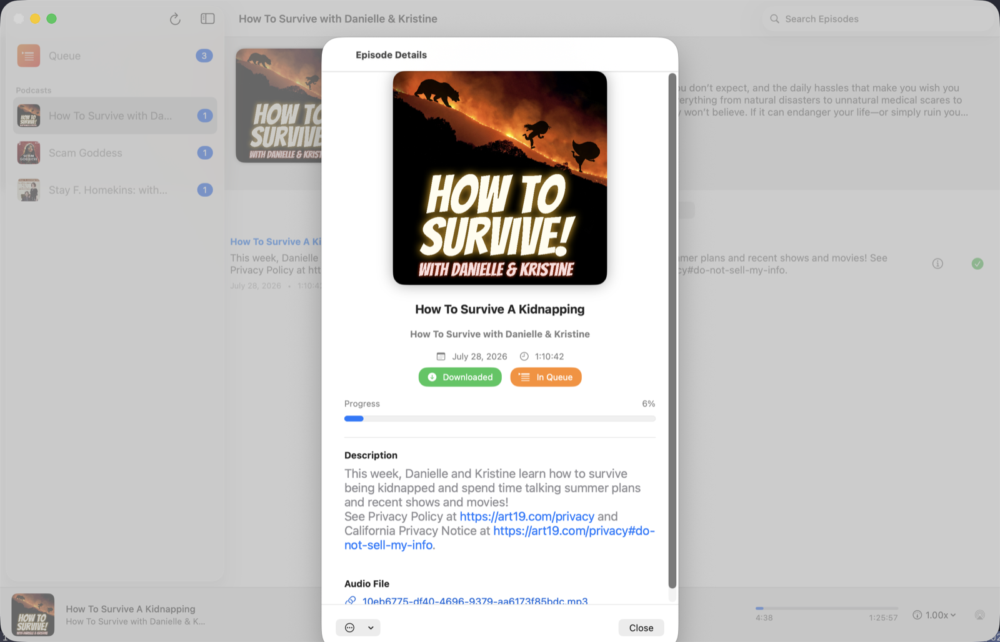
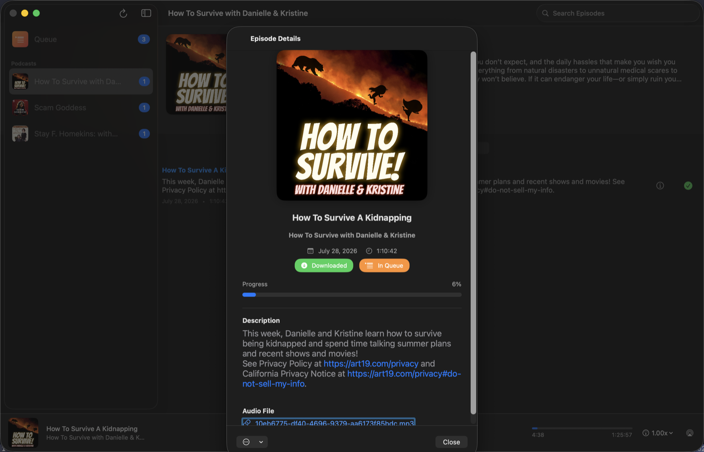
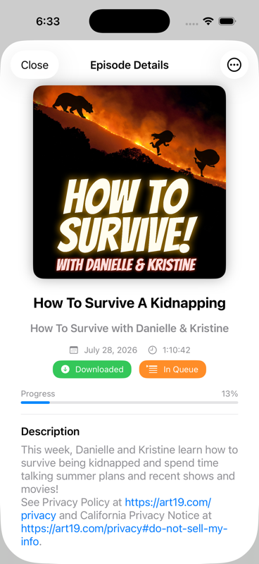
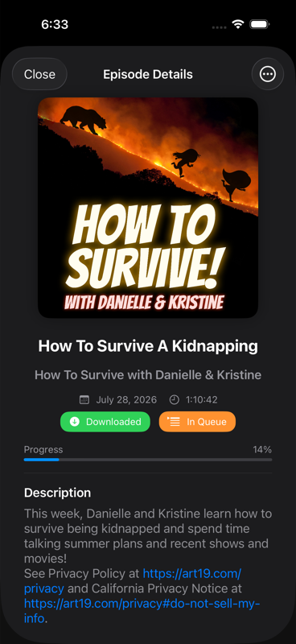
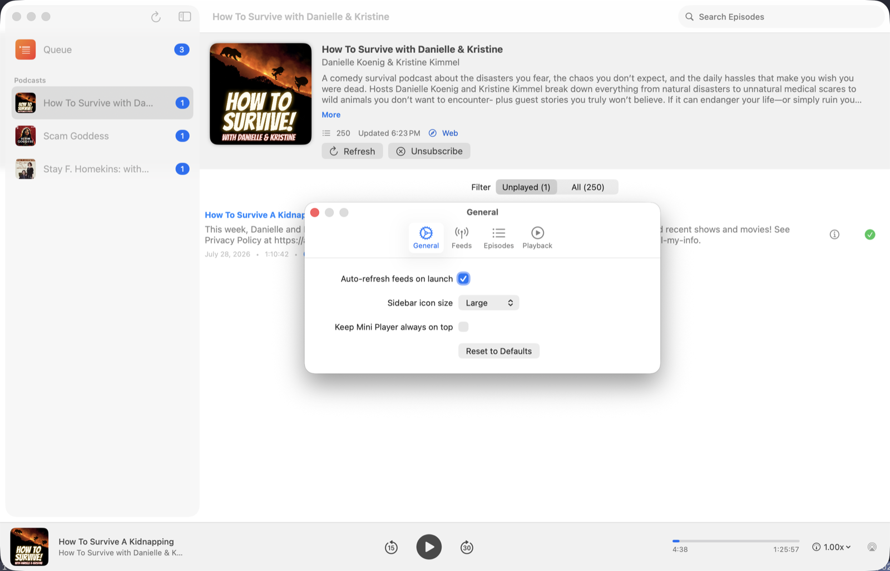
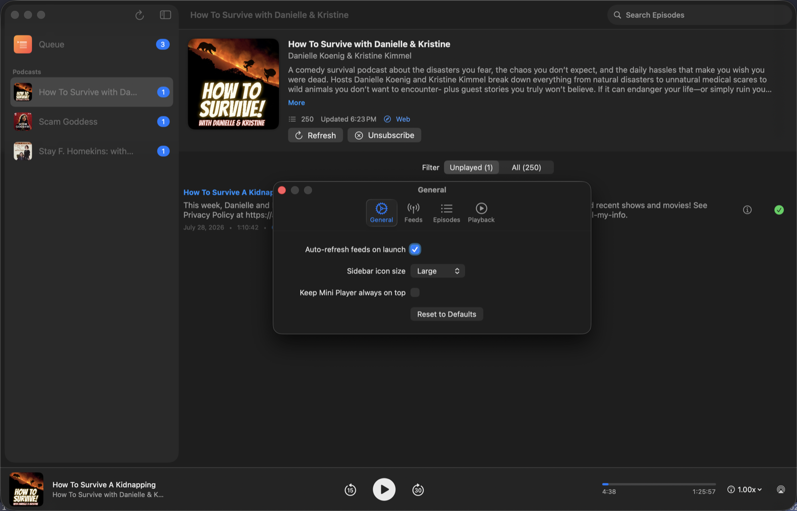
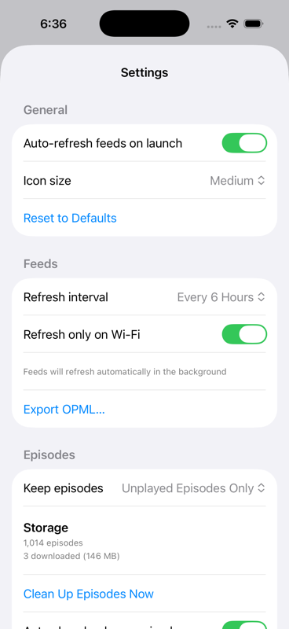
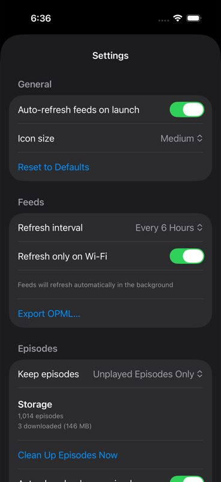
Build a single queue across every show you follow, instead of hunting through separate feeds.
Built with SwiftUI for Mac and iPhone — fast, lightweight, and at home on both platforms.
Auto-download new episodes, auto-delete played ones, and keep only what you actually need offline.
Subscriptions and queue stay in sync across your devices via iCloud.
The Mac app checks for new signed, notarized releases and installs them in place — no App Store required.